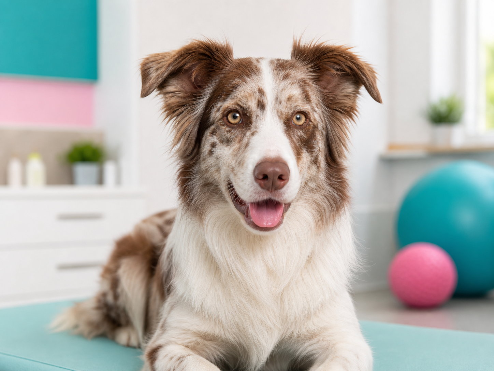
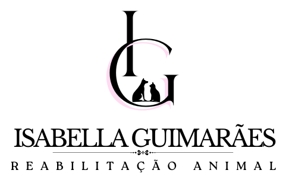
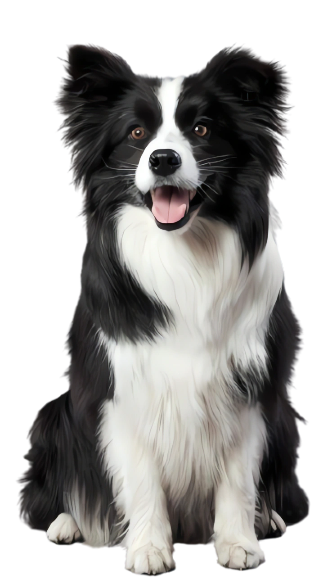
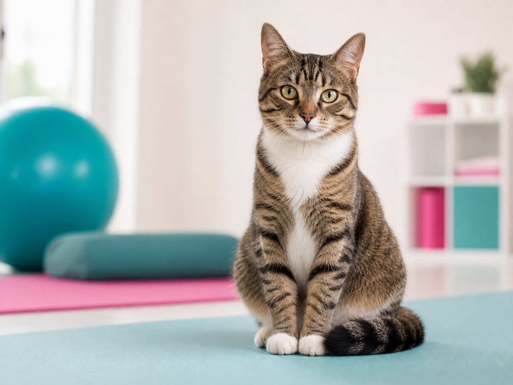
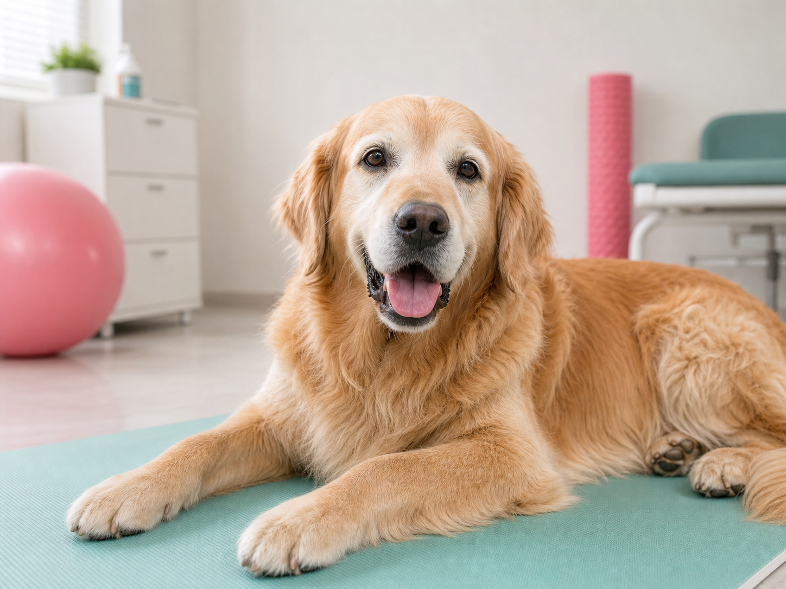

- Alívio da Dor
- Melhoria da Mobilidade e Flexibilidade
- Fortalecimento Muscular
- Reabilitação Pré e Pós-Cirúrgica

Médica-veterinária especializada em fisioterapia animal, com atendimento domiciliar e técnicas modernas que promovem mais qualidade de vida para o seu cão.




Tratamentos personalizados para aliviar dores, melhorar movimentos e apoiar a recuperação do seu pet.
A magnetoterapia é um tratamento terapêutico não invasivo que utiliza campos magnéticos, gerados por ímãs ou aparelhos eletromagnéticos, para estimular as células. O objetivo é melhorar a circulação local, acelerar a regeneração tecidual, reduzir inflamações e aliviar dores.
A fotobiomodulação é uma técnica terapêutica que utiliza luz de baixa intensidade, como laser ou LED, luz vermelha e infravermelha, para estimular as células do corpo. Ela ajuda a reduzir dores, diminuir inflamações e acelerar a cicatrização de feridas, sem aquecer ou machucar os tecidos.
A eletroterapia é um recurso terapêutico que utiliza correntes elétricas de baixa intensidade, aplicadas por meio de eletrodos na pele, para tratar dores crônicas ou agudas, inflamações e lesões musculares, além de auxiliar na reabilitação física.
A massoterapia é um conjunto de técnicas de manipulação corporal que utiliza o toque terapêutico para aliviar dores musculares, reduzir o estresse e promover o bem-estar físico e mental. Ela se difere de uma massagem simples por exigir conhecimento em anatomia e fisiologia.
Cães sentem dor em silêncio. Observar os sinais abaixo e agir cedo faz toda a diferença na recuperação e no bem-estar.
Médica-veterinária especializada em fisioterapia animal, com atendimento humanizado e foco em devolver mobilidade, conforto e qualidade de vida aos pets.
Universidade Anhembi Morumbi
Recursos terapêuticos modernos
Planos individuais para cada pet
Conforto e cuidado no ambiente do pet
Entre em contato pelo WhatsApp e receba uma orientação inicial gratuita. Atendemos com hora marcada, no conforto da sua casa.
São Paulo (capital)
Seg a Sex, das 08h às 17h